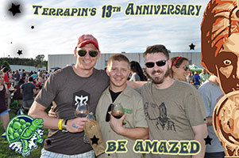

I am "The Hop Hitter", but you can call me John. I am an enthusiast and advocate for craft breweries,
with a focus on the Southeast region of the United States (U.S.). I have been exploring the world of craft beer for over a decade
and have been a beer consultant for a few years now. Hop Hitter is just a pseudonym I chose to help people jar their
memory. I began my venture as the Hop Hitter earlier this year when I was approached by PorchDrinking.com
to write reviews and cover events for their burgeoning website. Since then, I have fallen more and more in love with the
culture surrounding this exciting industry.
What Is Craft Beer?
Craft Beer is not new. It has had a lot of time to evolve and become what it is today. Craft beer, as it is understood
today, began in the 1980s with breweries like Samuel Adams and Widmer Bros. The Brewer's Association
is collectively accepted to be the industry standard for the U.S. when it
comes to what defines craft beer and a craft brewery. Below is a list of their standards.
BA's Beer Requirements
Water
Hops
Yeast
Starch Source
i.e. malted barley, wheat, rice, oats, rye, corn or sorghum for gluten free beer
BA's Craft Brewery Definition
Small
Annual production of 6 million barrels of beer or less (approximately 3 percent of U.S. annual sales).
Beer production is attributed to the rules of alternating proprietorships.
Independent
Less than 25 percent of the craft brewery is owned or controlled (or equivalent economic interest) by an alcoholic
beverage industry member that is not itself a craft brewer.
Traditional
A brewer that has a majority of its total beverage alcohol volume in beers whose flavor derives from traditional or
innovative brewing ingredients and their fermentation. Flavored malt beverages (FMBs) are not considered beers.
What I Provide
As Hop Hitter, I review beers, growler stations, breweries, festivals, and other events. Yes, it is a
splendid gig. I love it! There are so many styles of beers out their to try and every brewer puts their own
twist on each one. Stouts, IPAs, Kolsches, Lagers, Pilsners, Scotch ales, Brown ales, Golden ales, Dopplebocks,
Hefeweizens, Dubble ales, Triple ales, Quad ales, Goses, Flanders, etc. The list goes on and on and on. I travel
all over the southeast region picking up local and foreign beers and visiting local breweries and events
interviewing brewer's and event organizers to help share the love of craft beer. Every beer, every brewery,
everybody has a story.
Tasting & Reviewing Beers
My reviews do not include a rating system. To be honest, I picked this concept up working with
Porchdrinking.com. The idea is less about grading the beer and more about describing the
experience. Rating a beer on a scale can be a very subjective task. This is best left to the learned judges who have
trained for decades on what a beer style should taste, smell and feel like. There is not one beer that everybody
likes. It is inevitable that someone is going to score a beer low, undeservedly. I try to share the aromas and flavors
present while providing some back story for the beer, the brewery, or the style. Then I leave it to the reader
to chose to give the beer a chance.
I have visited breweries in various states, from New Mexico to Florida. All were fantastic in their own right and
few fail to embody the core of craft beer. Nearly every craft brewery has an open door policy allowing patrons to
visit and taste their beers. These guys love to show how they make beer and what they go through to get it on
nearby restaurant tables and store shelves. They do this through beer tours, which most charge a minuscule amount
for, but provide patrons with glassware and/or beer to take home, depending on the state laws. Some breweries have
actual tasting rooms with gift shops that sell everything from coasters to T-shirts to dog leashes with their
brewery name or staple beer plastered on them. Where state laws allow, patrons can also purchase beer at the brewery
to either drink there or take home. Others have full fledged restaurants attached to the brewery. Some are run by
the breweries, like Palmetto Brewing Co. in Charleston, SC, and others
are just symbiotic relationships between the restaurant owner and the brewery, like Hourglass Brewery
and Waco Tacos in Longwood, FL. If you have never visited a brewery and seen
the fermentation tanks or the cellars full of oak or cedar barrels filled with aging beers, I highly recommend it.
Fermenters at Hourglass Brewery (left) and Terrapin Beer Co. (right)
Festivals
The next best thing to visiting a brewery and hearing the tale of it's beginnings is going to a festival. Here
you meet LOTS of brewers from TONS of breweries. Each brewery in attendance brings 2-4 beers in either keg or
bottle/can format. It really depends on the festival. Traditionally though, they are kegs. You walk along the
festival, much a like a farmers market, sampling beers for FREE. I always recommend going to a festival to people
who are new to good beer. This is a low cost way to try various styles of beers from different areas to identify
which you prefer and could go without. Be sure to bring your wallet though. Their are always local food and
product vendors to purchase delicious festival food and fun local products like beer soap, screen printed towels
or t-shirts, and brewery gear.

Terrapin 13thAnniversary Carnival with Friends2015 (Spring) Georgia Craft Beer Festival in Atlanta, GA


{kind=link}
{kind=link}
{kind=link}
{kind=link}